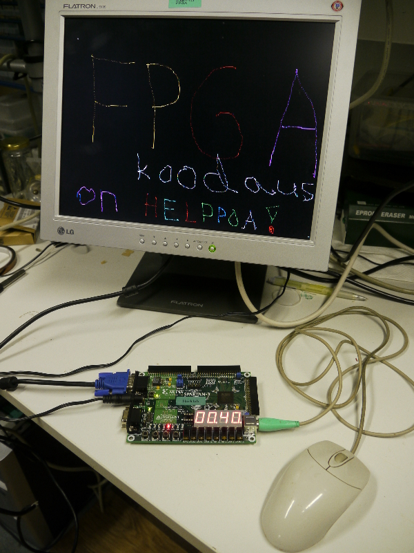

Esimerkki 17 - Piirto-ohjelma Verilogilla Spartan-3 FPGA Starter Boardille
(Coding by karttu 2005, photograph by zzorn 2011.)

(Klikkaa kuvaa nähdäksesi HIRES-version.)
- esim17.v - Päämoduli, johon tulevat esim17.ucf:ssä määritellyt inputit, outputit ja tristate-linjat ja väylät (viimeksi mainitut määritelmällä inout, esim. signaalit
PS2CLK ja PS2DATA, sekä inout [15:0] ISSI_DATA_IO 16 bitin väylä kortin alla olevaan ulkoiseen RAMmiin.) Tämä toplevel-moduli "instantioi" (siis käyttää)
edelleen moduleita muskpak1, vga4word, issia sekä shw4spec.
Liukukytkinten päällä sijaitsevat kahdeksan lediä näyttävät hiireltä
ensimmäisenä luetun status-tavun.
Esim. painamalla hiiren vasenta nappia, syttyy oikeanpuoleisin ledi (LD0),
ja oikeanpuolesita nappia painamalla taas äskeisen vasemmalla puolen
oleva ledi (LD1).
- esim17.ucf - Xilinxin ISE WebPack-softan haluama UCF-tiedosto ("User Constraint File", tms?), jolla määritellään mihin pinneihin kukin päämoduliin tuleva signaali itse asiassa menee, mahdollisia aikarajoituksia, yms. Risuaidalla (#) alkavat ovat pois-kommentoituja rivejä.
- debounce.v - Simppeli painonapin debounssaus 20-bitin laskuria käyttäen.
- shw4spec.v - Tämä on spesiaaliversio shw4hex.v -modulista, joka näyttää paitsi 4 nybbleä heksana neljässä 7-seg digitissä, niin myös ko. digittien desimaalipisteissä jotain hyvin sovelluskohtaista debuggausinfoa.
- vga4word.v - Simppeli VGA-kontrolleri, joka käyttää kortin alapuolella olevaa ISSI:n ulkoista staattista rammia (vain toista piiriä) videomuistinaan, siten että kuhunkin 16-bitin wordiin on pakattu neljä kolmella bitillä esitettyä väriarvoa. (Enemmänkin tietysti mahtuisi.)
Jos input-signaali
test_quilt_pat on ylhäällä, niin näytetäänkin
"testikuvaa", videomuistiin piirretyn sijasta. Tämä on kytketty kortin oikeianpuoleisimpaan painonappiin (BTN0, liukukytkinten vasemmalla puolen).
- vgatimer.v - Apumoduli edelliseen, generoi sopivat ajoitussignaalit
Sync, Gate ja Done 640x400 perus-VGA:ta varten.
- issia.v - Moduli ISSI:n asynkronisen staattisen RAM:min ohjaukseen, sopivine WAIT-tiloineen. En takaa että tämä olisi täysin oikein koodattu.
- ps2mbits.v - Moduli PS/2-hiiren kanssa kommunikoimiseen. Ensin hiirelle pitää lähettää tietty komento, että se menisi oikeaan tilaan, jonka jälkeen se alkaa lähetellä koordinattipaketteja FPGA:lle päin. Tämä on aika ajoituskriittistä, ja toimii vain joillakin PS/2-hiirillä. Yleensä mitä vanhempi ja karvalakkisempi malli, sen parempi. (Ei esimerkiksi optisilla?!)
- syncinp.v - Tämä pikkumoduli pistää vain ylimääräisen flip-flopin
sigIn ja sigOut-signaalien väliin.
Tätä käytetään edellisessä modulissa "bufferoimaan" hiireltä tulevat
PS2CLK ja PS2DATA-signaalit, sillä koska
niitä ole tahdistettu FPGA:n kellon kanssa, niin
metastabiilisuuden vaara on ainakin teoriassa olemassa, mikäli niitä ei
ole puskuroitu kuten nyt on.
- muskpak1.v - Tämä moduli lukee hiireltä tulevia koordinattipaketteja, ja aina kun hiiren vasemmanpuoleista nappia on painettu, se pistää k.o. koordinaatin, yhdessä kolmesta oikeanpuoleisimmasta liukukytkimestä luetun RGB-värin (
input [2:0] chosen_color, kun kaikki alhaalla = 000 = musta, kaikki ylhäällä = 111 = valkoinen, ja esim. 100 = punainen) kanssa paketoituna sisäiseen
FPGA-piirin sisäiseen Block-RAM-muistiin (jota tässä siis käytetään FIFOna eli jonona).
Tämä siis tehdään signaali-assignoinnilla
wire fifo_we = (!fifo_full & mouse_packet_received_OK & w_mouse_left_button & (prev_coordpacket != coordpacket));
Päämoduli esim17.v sitten vaan yhdistää ISSIN muistin data-lähtöpiuhat
VGA-kontrolleriin, ja aina kun VGA:n "beam" on näkyvän alueen
ulkopuolella, se tsekkaa muskpak-modulilta tulevaa fifo-tulo-väylää,
josko siellä olisi uusia paketteja (piirrettäviä pisteitä siis),
ja ehtii ne mainiosti kirjoittamaan ISSI-muistiin, ennenkuin taas
mennään näkyvälle alueelle. Näin siis ainakin teoriassa.
Kirjastomme hyllyssä olevassa Spartan-3 Starter Kit Board User Guide:sta
löytyy näiden (monesti yksinkertaistettujen) periferaalien
käytöstä perustiedot, jonka pohjalta olen yrittänyt nämä modulit
kirjoittaa. Ko. vihkonen löytyy myös Xilinxin saitilta
PDF:nä.
Itse korttiakin myydään vielä
Digilentin saitilla, tosin kalliimpaan hintaan
kuin vuonna 2004! Nykyään kannattaa tietysti ostaa jo samalla hinnalla
joku suurempi ja parempi kehityskortti. Kuvassa näkyvä kortti on joka
tapauksessa Hacklabillä yhteiskäytössä, varsinkin kun saadaan johonkin koneeseen
asennettua sopiva koodausympäristö, toimivine JTAG-kaapeleineen, jne.
Xilinxin ISE WebPack-softan tuottamia raportteja
- esim17_summary.html - Toplevel-raportti, josta ilmenee mm. että tämä design vie noin viidesosan Spartan-3 XCS200 FPGA-piirin käytettävissä olevasta tilasta.
- device_usage_statistics.html - Yksityiskohtaisempi statistiikka käytetyistä resursseista.
- esim17.syr - Käännettäessä tuotettu loki, josta näkyy vielä tarkemmin eri asioita.
- esim17.twr - Vielä tarkempi loki ajoituksista.
- esim17.par - Ja "Placement And Routing" vaiheen tuottamaa lokia.
- esim17_pad.txt - Tästä näkyy mihin nastaan kukin I/O-signaali on kytketty, ja miten.
Kannattaa tietysti aloittaa koodaaminen vähän yksinkertaisemmista jutuista.
Hakemistostani http://www.iki.fi/kartturi/FPGA/esimes/ löytyy lisää Verilog-esimerkkejä, useimmat paljon yksinkertaisempia kuin tämä. (Nimillä esim1.v - esim18.v).
{kind=link}